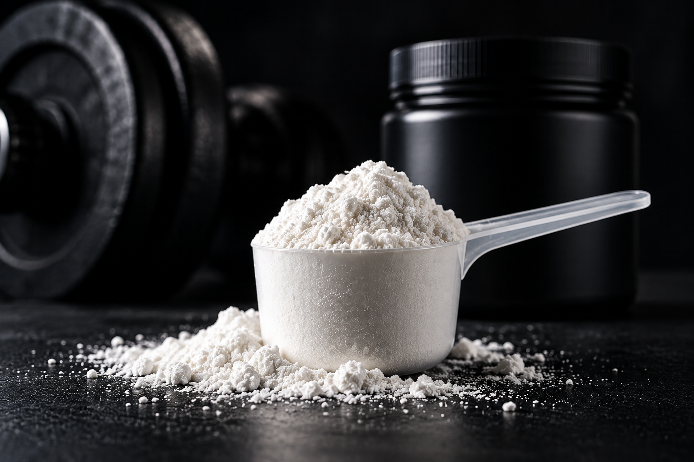
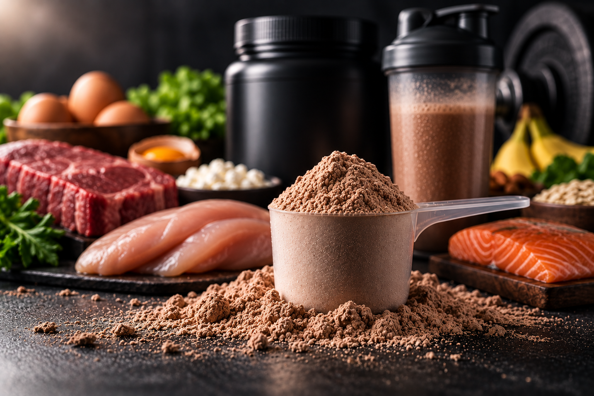
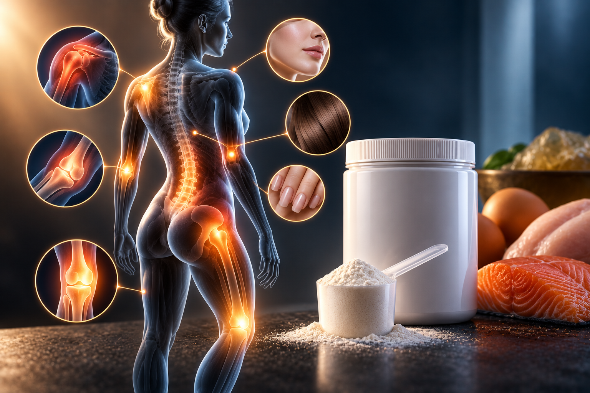

GUÍA DE SUPLEMENTACIÓN
Conocé qué hace cada suplemento y para qué se utiliza.
🏋️ CREATINAS

La creatina trabaja dentro de las células musculares, aumentando las reservas de fosfocreatina y de agua dentro del músculo. Esto ayuda a disponer de energía rápidamente durante el entrenamiento, permitiendo realizar esfuerzos más intensos y recuperarse mejor entre series, favoreciendo así el crecimiento muscular.
🥤 PROTEÍNAS

Las proteínas aportan los aminoácidos que los músculos necesitan para recuperarse y crecer. Se encuentran naturalmente en alimentos como pollo, pescado, carne y huevo. Este suplemento se utiliza principalmente después del entrenamiento y permite alcanzar de forma sencilla nuestra cantidad diaria de proteína, sin sumar demasiadas calorías.
⚡ ENERGÍA Y ENTRENAMIENTO.

Son suplementos que ayudan a llegar al entrenamiento con más energía y concentración, y a mantener un buen rendimiento durante el ejercicio. Se utilizan principalmente antes de entrenar, cuando buscamos un impulso extra para aprovechar mejor la sesión.
🐟 OMEGA 3

El Omega 3 aporta grasas esenciales que participan en el funcionamiento del corazón, el cerebro y otras funciones del organismo. Se encuentra principalmente en pescados y mariscos, y puede suplementarse cuando no consumimos suficiente pescado en nuestra alimentación.
🦴 COLÁGENO

El colágeno es una proteína fundamental para la estructura y resistencia de la piel, huesos, tendones y articulaciones. Con el paso de los años, nuestro cuerpo produce menos colágeno, por lo que suplementarlo aporta los aminoácidos necesarios para producir y mantener estos tejidos.
🍫 ALIMENTACIÓN
Son productos pensados para complementar nuestra alimentación de forma práctica y disfrutar opciones ricas mientras cuidamos nuestro aporte de nutrientes. Incluye snacks, barras, pancakes, productos para aumentar el aporte de calorías y otras opciones para acompañar distintos objetivos.
🧂 VITAMINAS Y MINERALES

Las vitaminas y minerales son pequeños nutrientes que nuestro cuerpo necesita todos los días para funcionar correctamente. Se encuentran en muchos alimentos y pueden suplementarse cuando nuestra alimentación no aporta la cantidad necesaria. Algunos de ellos incluso participan en funciones relacionadas con la relajación y el descanso.
🧬 AMINOÁCIDOS Y OTROS

Los aminoácidos son los componentes que nuestro cuerpo utiliza para formar proteínas y reparar tejidos. Algunos suplementos aportan aminoácidos específicos que pueden acompañar la recuperación y el entrenamiento, según las necesidades de cada persona.
¿QUERÉS SABER QUÉ TENEMOS DISPONIBLE?
Consultá con SUPLERI 31 para conocer los productos disponibles y encontrar la opción adecuada para vos.